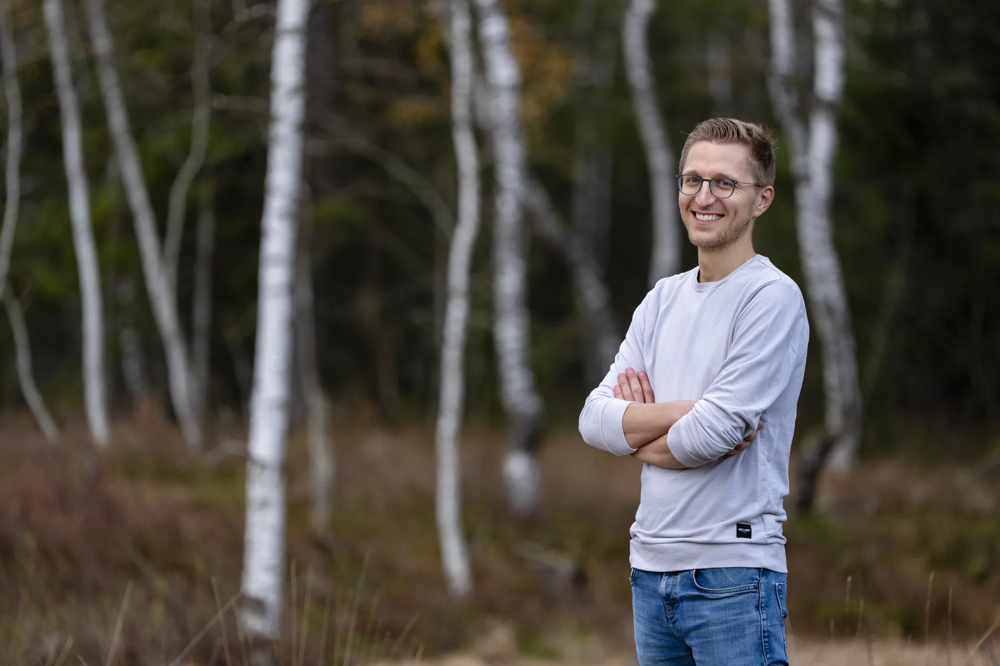

A new leadership team.
You are coming together for the first time, or new people are taking on responsibility. You want to get to know each other, clarify expectations and agree on how you make decisions and work together.


Team Workshops & Offsites
Achieve more together. And enjoy how you get there.
You want to speak openly, trust each other and share responsibility. We connect your business challenges with personal growth through workshops, offsites or ongoing work with your team.
Let’s talk about your teamOnline and in person. In English or German.
When to work together
You may have a difficult decision ahead. Or things may be going well and you sense there is more to explore. We begin with what matters to you and what you want to put your energy into together.
You are coming together for the first time, or new people are taking on responsibility. You want to get to know each other, clarify expectations and agree on how you make decisions and work together.
Important things go unsaid in meetings and surface afterwards. Or the same disagreement keeps coming back. You want to talk directly with each other and work through what has remained unresolved.
The company is growing, changing direction or being restructured. Roles and familiar ways of working are shifting. You want to find your bearings together and take responsibility for what comes next.
The options are on the table, but perspectives differ. You want to hear the objections, clarify who decides and agree on what each person will take responsibility for.
How I facilitate
How you relate to each other and how you make decisions shape your daily work. We start with a real conversation: who holds back, whose objections get heard, and what happens when someone disagrees? You explore your own patterns and practise responding differently, together.
As the CEO or team leader, you take part yourself. How you respond to difficult feedback shapes whether people speak up again. This work asks each of you to look honestly at your own contribution and be willing to grow, even when that feels uncomfortable.
Bring up the concern you have been holding back. Describe what you notice and what you want. Make room for disagreement, including with the person leading the team.
Listen when something is hard to hear. Notice when you defend yourself, withdraw or take over. Explore what matters to the other person and what is happening in you.
Clarify who decides, whose input is needed and who commits to what. Try those agreements in your next meetings and notice what helps you follow through.
The process
An in-person workshop, a series of online sessions or ongoing team development: we choose a format around your situation and what you want to work on. We agree on the scope, preparation and follow-up before we start.
We discuss your situation, what you want to achieve and who needs to be involved. Where useful, confidential conversations with team members help inform the design.
We decide whether to work online, in person or in a combination of both. I design the workshops around your goals and the conversations you need to have, as a single event or a series.
I guide you through conversations and experiential exercises. We work with your actual concerns and what comes up between you as you explore them. The process develops with you.
You put new ways of working into practice. In the follow-up, we look at what changes: are difficult topics raised sooner? Do conversations lead to workable next steps? Does each person feel able to improve the situation?

Your facilitator
Executive coach, founder, and father of three.
I know the responsibility of building a business. My own coaching, and becoming a father, also taught me how much changes when clear thinking meets an honest relationship with what I feel. Both shape how I work with you.
A few practical questions
It can get very personal. We work with the feelings, assumptions and habits that show up between you, including when things get uncomfortable. Each of you needs a genuine willingness to do the work: look at your own contribution, listen to difficult feedback and try something different. That includes the CEO or team leader. A willingness to grow is essential. You decide what you share; willingness to engage and personal boundaries belong together.
Workshops and offsites in person, online workshops, and ongoing work with your team. We can spend one or more days together, meet for shorter online sessions or work regularly over a longer period. We choose the duration and rhythm around your needs.
I facilitate in English and German, online and in person. We can work entirely online, meet at a location we agree on, or combine in-person workshops with online sessions.
After we clarify your needs, you receive an individual proposal outlining the scope and fee, including agreed preparation, facilitation, follow-up and any travel expenses.
Yes. Regular sessions give you space to work on what happens between meetings: whether agreements hold, how you handle new tensions and where familiar patterns return. We agree on the frequency and duration together. An offsite is optional.
Let’s talk
What would you like to make possible together? Tell me what you long for in your team and what is on your mind. I’ll reply personally so we can explore whether my facilitation is a fit.
An initial idea is enough. We can work out the format together.
Thank you for your message. I’ll reply personally by email to discuss your team’s needs and a possible time to talk.
Max